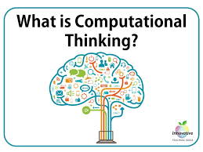

Module 1 Reflection.

Problem solving means to solve problems. Logical thinking means to think with a side of knowledge. Creative thinking means to think with imagination. Critical thinking means to critique someone's thoughts.
Critical Thiking
Problem solving
Module 2 Reflection .

My reflection to the module is that computational thinking is important to computer science. It can help us solve problems and debug computer issues. It can also help us come up with clever ideas to further develop computer science stuff. That is my reflection to the module.
Info on computational thinking
More info on computational thinkings